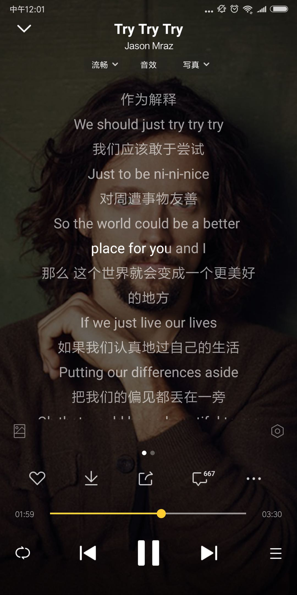
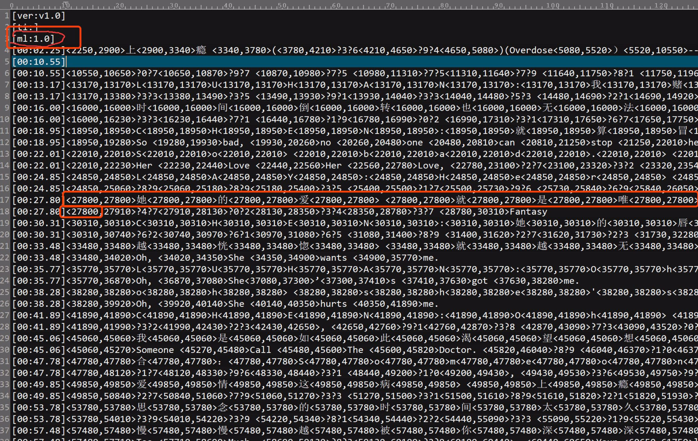
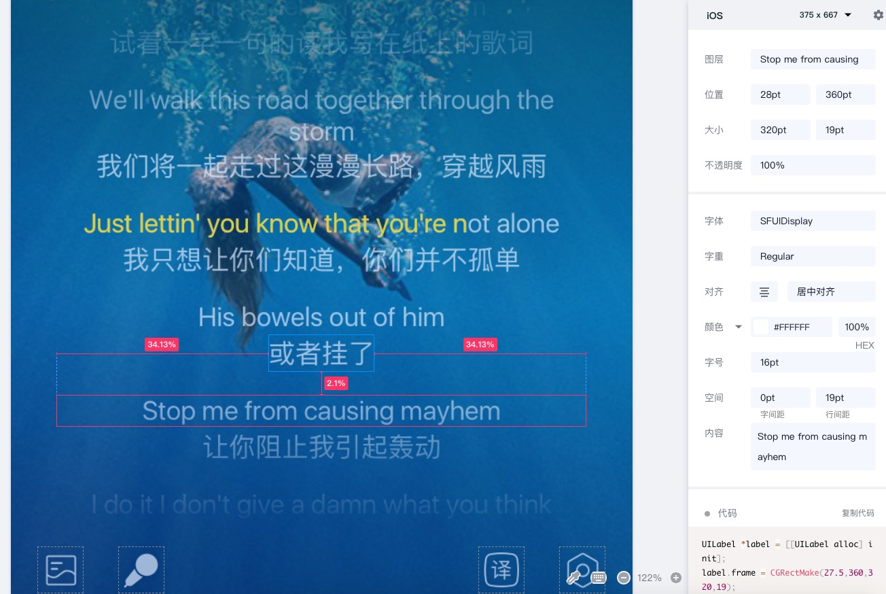

需求背景
传统听歌场景中，用户有意识的前台亮屏播放的主要场景包括——看评论，看歌词。
与竞品比较歌词翻译等衍生功能：

竞品
支持功能
Column 3
酷狗
播放器-展示/隐藏翻译歌词，展示/隐藏听译歌词
q音
播放器-展示/隐藏翻译歌词，展示/隐藏听译歌词
网易
个人设置-展示/隐藏翻译歌词
酷我
无设置项，不支持听译歌词

需求描述-页面

-入口：
在播放器-歌词页的歌词设置入口上方增加一个“译词展示/隐藏”的配置入口
-交互：
• 针对某单曲，若曲库内存在翻译歌词时，默认展示一个【译】按钮在歌词设置按钮上方（若曲库返回数据不包括翻译歌词，则不展示【译】按钮）；
• 当用户点击按钮时，分别在 展示翻译歌词/隐藏翻译歌词 中切换（对应按钮有选中/未选中两个样式）；
• 当歌曲播放时，原文高亮；
译
-服务端：
1、目前通过pc逻辑确认了，大后台原始给到的歌词，其实是有标注“译文歌词的字段”——ml>=1.0时，说明有译文歌词，客户端可以据此字段判断是否展示译文功能入口
2、大后台原有译文歌词遵循规则有：
①一行歌词的时间轴不变
②一行歌词的时间轴等于下一行原文歌词的第一个时间轴
见右图。

-客户端改动：
1、根据大后台原有歌词中的 ml 字段来判断是否有译文，已确定是否展示【译】按钮
2、根据歌词中时间轴规则，来判断哪些数据是译文，点击【译】按钮时，对译文歌词执行 “隐藏/展示” 的循环操作

需求描述-原文译文间距视觉调整
1.歌词间距，在播放页缩略时，展示2行
2.安卓桌面歌词展示译文与否？否